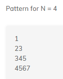
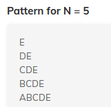
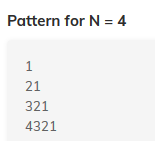
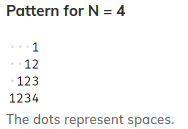
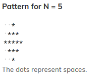

Program to input an integer N and print the sum of all its even digits and sum of all its odd digits separately.
Given a binary number as an integer N, convert it into decimal and print.
Given a decimal number (integer N), convert it into binary and print.
Print the following pattern for the given N number of rows.
Print the following pattern for the given N number of rows.
Print the following pattern for the given N number of rows.
Write a program to print first x terms of the series 3N + 2 which are not multiples of 4.
Input format:
Integer n (denoting the number of terms to print)
Output format:
Terms of series (separated by space)
Write a program to generate the reverse of a given number N. Print the corresponding reverse number.
Input format:
Integer N
Output format:
Corresponding reverse number
Write a program to calculate the total salary of a person. The user has to enter the basic salary (an integer) and the grade (an uppercase character), and depending upon which the total salary is calculated as -
totalSalary = basic + hra + da + allow – pf
Note:Round off the total salary and then print the integral part only.
Input format:
Basic salary & Grade (separated by space)
Output format:
Total Salary